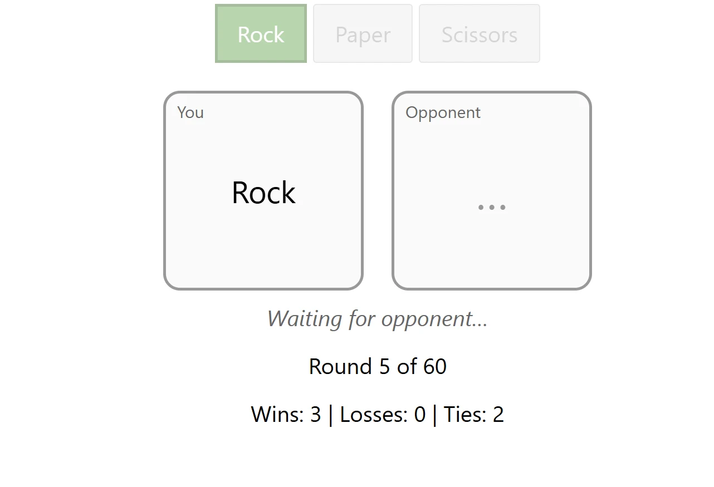

Beyond Predictive Processing in Play
For my senior capstone, I tested a popular theory that fun in play comes from beating your own predictions, using rigged games of rock-paper-scissors with 30 students.
- Role
- Sole researcher, with a faculty advisor
- Methods
- Literature review, controlled experiment, Bayesian analysis
- Tools
- R (bayestestR, ggplot2), a custom game website, paper surveys
- Scope
- Four fields of play research, 30 participants, 1,800 games
TL;DR
- The question
- Does fun in play really come from reducing prediction error, as predictive processing claims?
- What I did
- Reviewed play research across four fields, designed and ran a deception study with 30 students, and analyzed it with Bayesian methods.
- What came out of it
- All three groups had about the same amount of fun, which challenges the theory.
- Read the theoryAndersen et al. (2023) say fun comes from errors shrinking faster than expected
- Rig the gameA custom site set how often each player won, in three conditions
- Run sessions30 students played 60 games each, rating their fun every 20
- Test the claimBayes factor and ROPE checked whether the groups really differed
The problem
Play is everywhere in our lives, but why it feels fun is still an open question. Developmental psychology, anthropology and neuroscience explain what play is for, not what it feels like. A recent theory from predictive processing fills that gap: the brain enjoys play when its prediction errors shrink faster than it expected. Nobody had tested it directly.
If fun comes from beating your own predictions, will people who win more, or win increasingly often, have more fun?
My approach
Control the surprise. In rock-paper-scissors, every win is a correct prediction. Players came in pairs and believed they were playing each other from separate rooms, but a custom website set how often they won: about a third of the time (Average), two thirds (High), or a climb from one sixth to two thirds (Increasing). Built-in delays made it feel like waiting on a real person.
Measure fun as it happens. Players rated how much fun they were having on a 1 to 7 scale after every 20 games, hidden among decoy questions. A mood form (PANAS) beforehand, plus questions on competitiveness and whether the pair knew each other, let me check for other explanations.
Test for no difference, not just a difference. A small sample cannot prove groups are the same with ordinary tests, so I used Bayesian methods: a Bayes factor and a region of practical equivalence (ROPE).
My part. The whole project, from the literature review to the final talk: I designed the study and its cover story, set up the rigged game site, ran the sessions, analyzed the data and presented it. My advisor guided the work.

What I found
Every group had fun: mean ratings were 5.60 (Average), 5.88 (High) and 5.33 (Increasing) out of 7. The data were about 2.7 times more likely under a model where the group made no difference, and 79 to 87% of each comparison fell inside the range I set as practically equal. The Increasing group, which the theory says should have the most fun by the end, was 73% likely to have had no more fun than the High group.
One exploratory result stood out: more competitive players had more fun (p = .04), whichever group they were in. Mood and knowing your opponent made no difference.
With 30 Carleton students and a single fun rating, a small effect could still hide in the data. But a theory that puts prediction error at the heart of fun should have shown more than this.

What I took from it
The results pointed me to a different account of fun, drawn from aesthetics and phenomenology: fun as an aesthetic emotion aimed at the play itself. It fits the competitiveness result. You chase the win to play the game properly, but you don't need to win to enjoy it.
Running a deception study taught me how much of an experiment lives in small details, like the fake waiting times that made an opponent feel real.